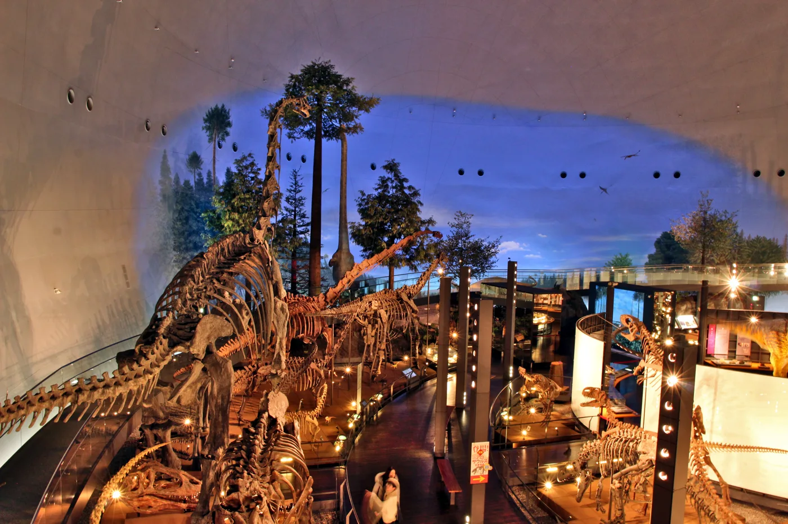

ROOM01DAY 1 · 勝山DEEP TIME / 恐竜博物館
見上げたら、
歯と爪の探偵に。
大きさに驚いた、その次へ。口もとや前あしを見比べると、太古の暮らしが少し近くなる。
51
「恐竜の世界」に並ぶ全身骨格の数 [1]
見どころと、当日の楽しみ方＋
01
骨格にも、いろいろな「本物」。
全身骨格51体のうち、10体には実物の化石が使われている。どの部分が実物で、どこが複製なのか。展示の解説を読む楽しみが増える。 [1]
02
食べ物のヒントは、口もとに。
歯やくちばしの形、歯に残った微細な傷は、食べ物を推定する手がかり。体の特徴なども合わせて考え、食性がまだ分からない恐竜もいる。 [2]
03
福井のスターは、前あしにも注目。
フクイラプトルは日本で初めて学名が付いた肉食恐竜。前あしの大きなカギ爪が特徴だ。頭だけでなく、腕の先まで目を向けてみたい。 [1]
04
頭の中にも、展示の世界がある。
ダイノラボではT.rexの骨格を中心に体や暮らしを学べる。頭骨の内部を映し出すプロジェクションマッピングも紹介されている。 [1]
TRY THIS TOGETHER
ふたりの観察メモ
- 気になった歯をひとつ選び、先の形・厚み・並び方から食べ物を予想。解説を読んで答え合わせしよう。
- 骨格を横から眺め、頭から尾までの線を目でたどる。自分がその体だったら、どう歩くだろう。
観察は展示の案内に沿って。退館の目安は、しおりの駐車場別の予定を確認。